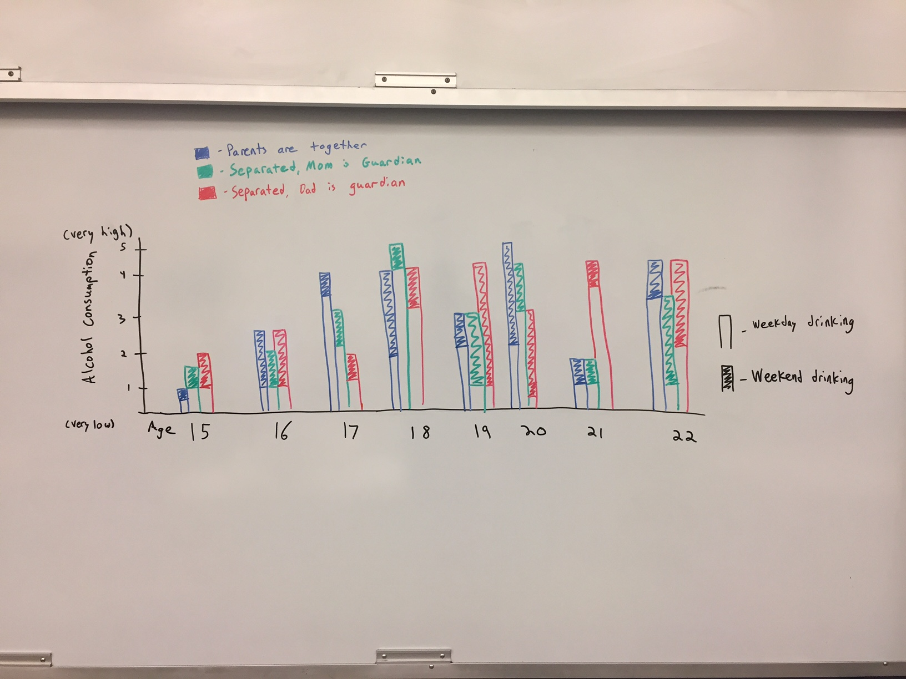
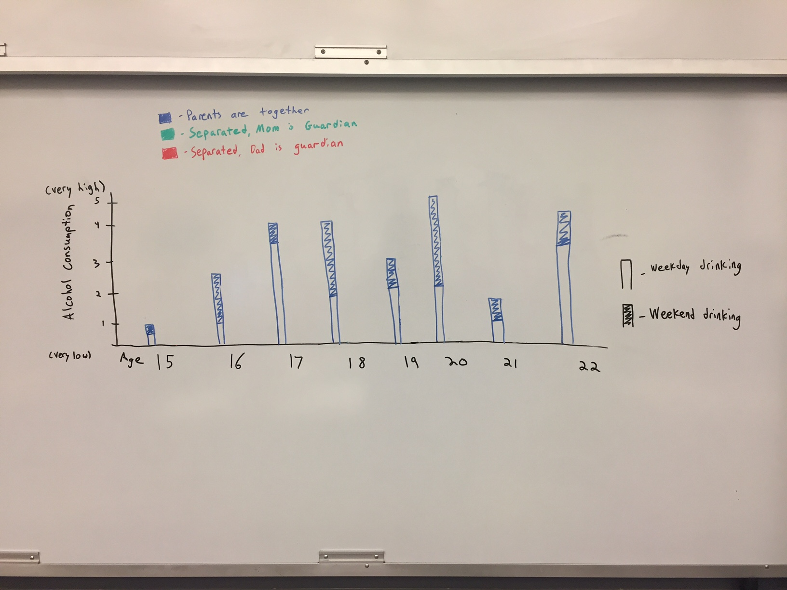

The Dataset:
Link:
http://archive.ics.uci.edu/ml/datasets/STUDENT+ALCOHOL+CONSUMPTION
Our dataset is the Student Alcohol Consumption dataset from UCI. There are actually two datasets here: one for a math class and one for a Portuguese language class. We are using the Portuguese language class dataset because it is much bigger than the other. This dataset has 648 examples and 33 attributes. Of these, 13 are binary, 14 are numeric, and 6 are categorical.
The attributes that we will be working with are:
- age - student's age (numeric): 15-22
- Sex - student's sex (binary): 'F' - female or 'M' - male
- famsize - family size (binary): 'LE3' - <= 3 or 'GT3' > 3
- Pstatus - parent's cohabitation status (binary): 'T' - together or 'A' - apart
- guardian - student's primary guardian (categorical): 'mother' or 'father' or 'other'
- activities - extra-curricular activities (binary): 'yes' or 'no'
- Dalc - workday alcohol consumption (numeric): 1 - very low to 5 - very high
- Walc - weekend alcohol consumption (numeric): 1 - very low to 5 - very high
So our data looks like this:
| sex | age | famsize | Pstatus | guardian | activities | Dalc | Walc |
| F | 18 | GT3 | A | mother | no | 1 | 1 |
| F | 17 | GT3 | T | father | no | 1 | 1 |
| F | 15 | LE3 | T | mother | no | 2 | 3 |
| F | 15 | GT3 | T | mother | yes | 1 | 1 |
Questions We Can Answer Through Our Interactions
- At what ages do students drink more?
- Do students whose parents are divorced drink more than students with married parents?
- Do students with a male single parent drink more than those with a female single parent (or vice-versa)?
- For each of the above questions, how do these drinking amounts change during the week vs. the weekend?
- How much does a particular group of students drink, based on the following criteria: sex, age, family size, and extra-curricular involvement (i.e. male, 17, 6 person family, does extracurriculars)?
Initial Interface:
The first implementation will be a stacked bar chart that examines how age and a student's family life affects their alcohol consumption. The bar chart will be divided into different ages. Each age will have three color-coded bars--one for students whose parents are together, one for students whose parents are separated and live with their father, and one for students with separated parents who live with their mother. Each bar will have two stacked parts: the amount of drinking during the workweek, and the amount during the weekend. We will keep the scale from 1-5 by dividing the sum of week and weekend drinking (which will be between 2 and 10) by 2.
There will be two ways to interact with the chart. If you click an age, then all the other ages will disappear so you can just look at that one. If you click on a bar, then all the bars that aren't that parenting situation will disappear, so you can just see how students with that family situation consume alcohol.

The second implementation will use a collapsable tree layout (http://mbostock.github.io/d3/talk/20111018/tree.html). The concept here is that you can choose a series of attributes, and then see the average amount of alcohol consumption for someone with those attributes. The user will be prompted to choose either a male or female sex. Then, they will choose an age (15-22), whether or not the family has more than three members, and whether or not the student participates in extracurricular activities. The tree will then display the average amount that a student, based on these attributes, drinks during the week and during the weekend.
Using the Interactions:
The Stacked Bar Chart:
Let's say that I want to focus on the youngest drinkers. I click on the number 15, and voila: I now only see bars that pertain to 15 year olds, and they have scaled to fit the screen. I see three bars: one for students whose parents are together, one for students whose parents are separated and who are living with their mothers, and one for students whose parents are separated and who are living with their fathers. Each of these bars also has two parts: the bottom is the workweek drinking, and the top is the weekend drinking.
Additionally, let's say that I want to only look at students whose parents are together. I click on any bar that is colored blue, and now all the non-blue bars go away, and the blue bars scale and get bigger. It would look like this:
This allows me to see students (still divided by age group) whose parents are together.
The Collapsable Tree:
First, you select a sex by clicking male or female. Then you pick an age by clicking 15, 16, 17, 18, 19, 20, 21, or 22. Then, you select a family size (more or less than 3), and finally you select 'does extracurriculars' or 'does not do extracurriculars'. As you click one of these, the options for the next one are revealed. At the end, text will appear that lists the avg. workday and weekend alcohol consumption for students in that particular grouping. You can select other attributes, too, in order to see more groupings, and deselect attributes at any time.
D3 Layouts:
New Concepts
- Stacking bars
- Collapsable tree layout
- Setting up a class of multiple, specific objects that disappear when something is clicked
- Clicking on something in the axis titles
- Using a legend
- Reading in a .csv file
Intended Implmentation Path:
- Clean dataset (i.e. eliminate unecessary columns) and get it read into a JS script)
- Make the collapsable tree layout and get it pretty much working
- Make a static, stacked bar chart of our data
- Implment functionality for clicking a bar and making all but that type of bar disappear
- Implement functionality for clicking age group on axis and only seeing those bars
- Add legend to bar chart
- Finalize and make visualizations look prettier
- Make sure code is very clear and legible